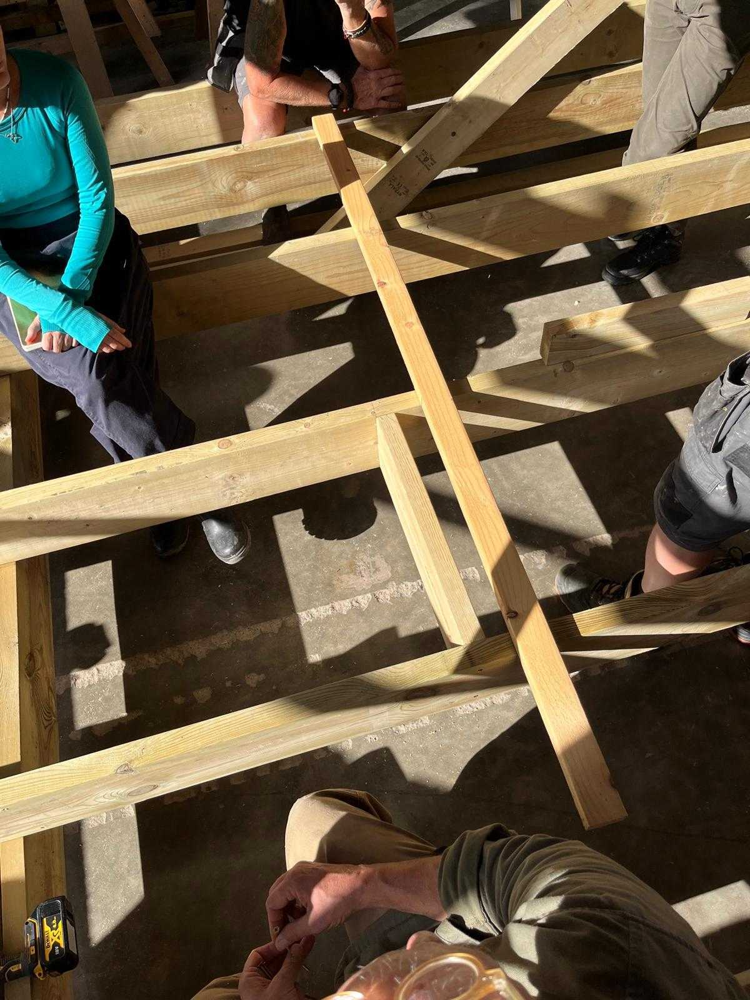
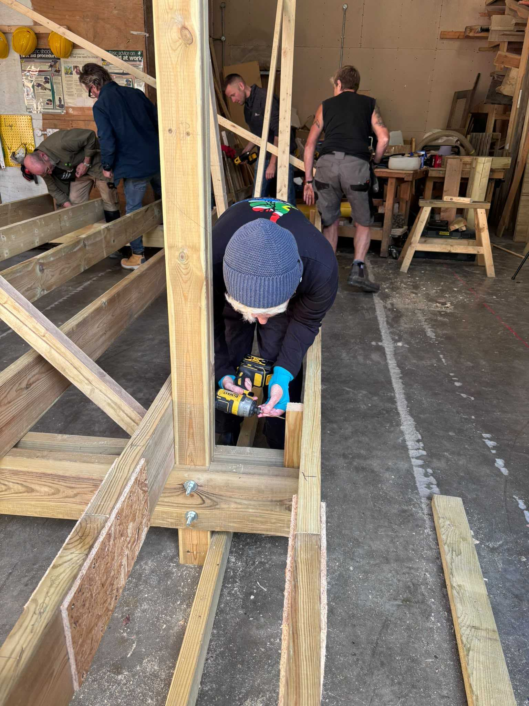

Four days, a set of plans, and the realisation that building with less can sometimes mean thinking a whole lot more.
What I tried
There's something rather beautiful about timber framing. The simplicity of the material. The geometry. The idea that individual pieces of wood can be carefully measured, cut and joined to create something strong and lasting.
Having already experienced building the shell of a tiny house, I wanted to take things a little further. So I signed up for a four-day timber framing course, exploring the Walter Segal method of self-build construction.
The approach appealed to me immediately. Simple, flexible designs, an emphasis on standard material sizes, less reliance on wet construction methods and an ambition to make building more accessible to ordinary people.
This time, we worked much more closely from a set of plans. And I quickly discovered that understanding a building on paper is an entirely different skill from helping to assemble one.
What I noticed
One of the biggest surprises was how much of building happens before anyone picks up a saw. We explored groundwork, surveying, ground pins and different foundation options, including steel supports. The message was clear: understand your site before you start cutting timber.
We learned about using surveying staffs, reading plans and preparing cutting lists. Every piece of wood needs a purpose, a position and a measurement.
Then came the structural thinking. We talked about load paths, how weight travels through a building and eventually reaches the ground. Posts carry loads downwards through compression. Joists resist bending and support floors or ceilings. Bracing helps a frame resist sideways movement.
And here's something that genuinely changed how I looked at timber: its strength isn't simply about how much wood you use. Its orientation and the way it works within the structure matter enormously. A piece of timber doesn't become a joist or a post because of its dimensions alone. Its position and purpose give it that identity.
We also explored joints, from the connections between rafters, joists and wall battens to scarf joints for joining longer lengths of timber. There were lap joints, braces, coach bolts and plenty of pocket screws.
Some of the machinery was demonstrated rather than operated by us, so there's still a lot of hands-on practice ahead of me.
But even the smaller lessons stuck. Don't automatically cut directly on your marked line. Think about which side of the line you need to keep. And when bringing floorboards together, use a batten to help close the gaps rather than attacking the boards directly with a hammer.
Simple details, but exactly the sort of practical knowledge you don't pick up sitting behind a desk.
What I'm learning
The Segal approach made me think differently about what makes a good building.
It's not necessarily about using more materials, more complicated techniques or more elaborate foundations. It's about understanding what each component needs to do and designing accordingly.
Working with standard material dimensions can help reduce waste. Thoughtful structural design can make construction simpler and more accessible.
We also explored the relationship between materials and performance, from insulation between floor joists to sheathing boards, roof construction and moisture management.
I was particularly interested in the possibilities of leaving structural timber visible. A brace doesn't always need to be hidden. Sometimes the very thing that makes a building strong can also be part of what makes it beautiful.
That combination of practicality, simplicity and craftsmanship really appeals to me.
I'm also learning that construction drawings are a language of their own. In software engineering, I'm comfortable working with complex systems and understanding how components depend on one another. Here, I'm having to develop the ability to look at a drawing and imagine the physical structure it represents.
It's challenging, occasionally frustrating and surprisingly satisfying when something starts to make sense.
Next time
I left the course with a much longer list of things I wanted to learn than when I arrived. Reading plans, understanding measurements, making accurate joints, using machinery and getting more confident with the tools.
Four days had barely scratched the surface.
But what surprised me was that I didn't find that daunting. I found it exciting.
There's something rather liberating about discovering an entirely new world of knowledge and realising just how much there is to explore.
I'm used to being reasonably competent at what I do. Here, I'm right back at the beginning, asking questions, making mistakes and trying to understand things that other people seem to know instinctively.
And I'm enjoying it.
My next step is to keep practising, build smaller projects independently and slowly turn some of this new knowledge into actual skills.

